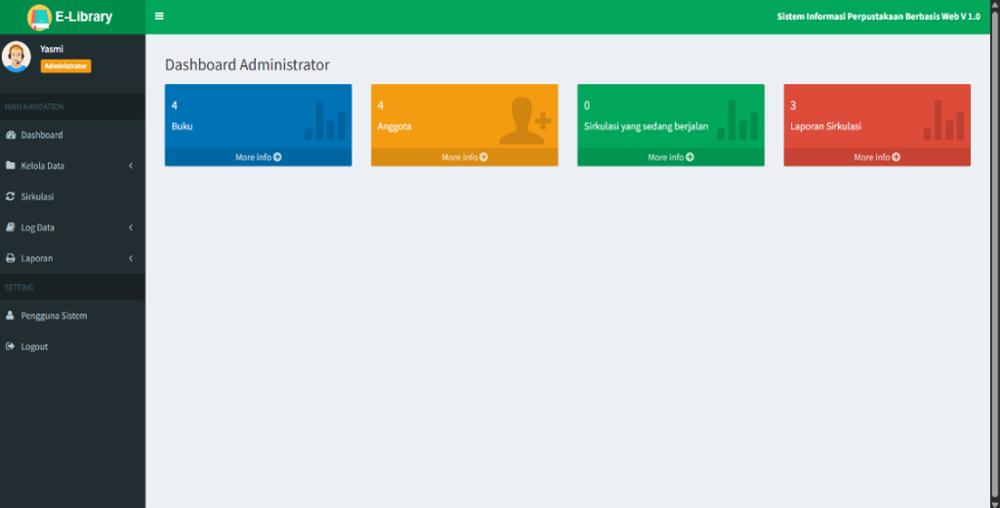
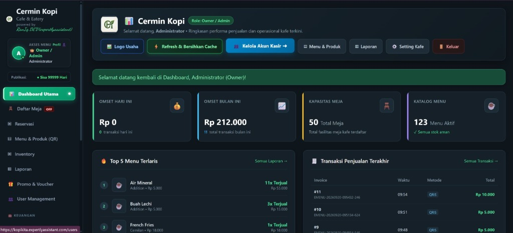
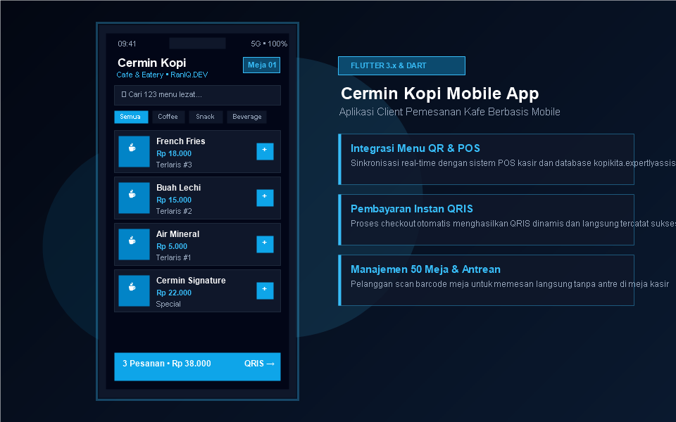

Halo Semua 👋, Perkenalkan Saya
RANDI ARRASYID
Lulusan Sarjana Sistem Informasi dengan pengalaman di bidang IT Support, administrasi data, dan pengembangan aplikasi. Memiliki kemampuan troubleshooting, pengolahan data, serta pengembangan web & mobile dengan ketertarikan tinggi pada software development.
Tentang Randi Arrasyid
Randi Arrasyid, S.Kom
S1 Sistem Informasi • UPI "YPTK" Padang
Profil Profesional
"Lulusan Sarjana Sistem Informasi dengan pengalaman di bidang IT Support, administrasi data, dan pengembangan aplikasi. Memiliki kemampuan troubleshooting, pengolahan data, serta pengembangan web dengan ketertarikan pada teknologi informasi dan software development."
Memiliki pengalaman magang langsung di Badan Usaha Milik Negara (PT PLN (Persero) UID Sumatera Barat) dalam pemeliharaan infrastruktur jaringan dan troubleshooting IT, serta instansi pemerintahan (Dinas Tenaga Kerja dan Transmigrasi Provinsi Sumatera Barat) dalam analisis, validasi, dan administrasi data terstruktur.
IT Support & Network
Troubleshooting HW/SW, pemeliharaan LAN/infrastruktur, dan manajemen aset IT.
Data Administration
Data cleaning, analisis, formula Excel/Sheets, dan penyusunan laporan kedinasan.
App Development
Pengembangan aplikasi web berbasis PHP & MySQL, Web Design, serta mobile Flutter.
Pengalaman Magang BUMN & Dinas
Proyek Unggulan Klien & Akademik
Skill Teknis Dikuasai
Komitmen & Tanggung Jawab
Pendidikan & Pengalaman Kerja
Rekam jejak studi di Universitas Putra Indonesia "YPTK" Padang serta pengalaman magang di PLN UID Sumbar dan Dinas Tenaga Kerja.
Pendidikan Formal
Universitas Putra Indonesia "YPTK" Padang
S1 SISTEM INFORMASI
Universitas Putra Indonesia “YPTK” Padang
Mempelajari analisis dan perancangan sistem informasi bisnis, rekayasa perangkat lunak, arsitektur basis data relasional (MySQL), pemrograman aplikasi berbasis web (PHP & HTML/CSS), serta teknologi mobile (Flutter).
Sarjana Sistem Informasi Siap Kerja
Mempersiapkan diri dengan kombinasi keahlian teknis (troubleshooting hardware/jaringan, coding PHP, MySQL, Flutter) dan keahlian analitis pengolahan data untuk kebutuhan industri.
Pengalaman Kerja
Magang BUMN & Instansi Pemerintahan
IT Support Intern
PT PLN (Persero) UID Sumatera Barat
- • Membantu pemeliharaan jaringan internal dan infrastruktur IT.
- • Melakukan konfigurasi hardware/software serta troubleshooting.
- • Mendukung pengelolaan aset dan kebutuhan teknis karyawan.
- • Membantu memastikan perangkat dan sistem IT berfungsi dengan baik.
Data Administration Intern
Dinas Tenaga Kerja dan Transmigrasi Provinsi Sumatera Barat
- • Mengelola dan mengolah data menggunakan Microsoft Excel & Google Sheets.
- • Melakukan data cleaning, analisis, dan visualisasi data.
- • Mendukung penyusunan laporan dan menjaga keakuratan data.
Keahlian & Kompetensi (Skills)
Daftar keahlian pemrograman, basis data, sistem operasi, pengolahan data, dan infrastruktur IT yang dikuasai.
PHP
Web Backend & LogicMySQL
Relational DatabaseHTML
Semantic Web StructureWEB DESIGN
UI/UX & ResponsiveFlutter
Cross-Platform MobileLinux
Server & EnvironmentMicrosoft Excel
Data Cleaning & ChartsMicrosoft Access
Data Form & QueryMicrosoft Word
Technical Report & DocsIT Troubleshooting
HW / SW / NetworkingPortofolio Karya & Proyek
Proyek Client Project, Academic Project, dan studi kasus sistem informasi yang telah diselesaikan.

Academic Project 5 ScreenshotsWeb Library System (E-Library)
Sistem Informasi Perpustakaan Berbasis Web V 1.0: Dashboard admin, sirkulasi peminjaman, perhitungan denda otomatis Rp 1.000/hari, dan data anggota.

Client Project 4 GaleriCafe Ordering System (Cermin Kopi)
Sistem kasir (POS) & manajemen operasional kafe: dashboard KPI omset real-time, kapasitas 50 meja, katalog 123 menu aktif, dan pembayaran otomatis QRIS.

Mobile App 3 GaleriMobile Cafe App with Flutter
Aplikasi mobile pemesanan Cermin Kopi berbasis Flutter: scan barcode meja QR, varian menu dinamis, integrasi order instan ke kasir POS, dan pembayaran QRIS.
Hubungi Randi Arrasyid
Terbuka untuk peluang kerja IT Support, Data Administrator, Full Stack/Frontend Developer, maupun proyek freelance.
Informasi Kontak
Jangan ragu untuk menghubungi saya melalui saluran kontak berikut:
Kirim Pesan Cepat
Silakan isi formulir di bawah ini untuk mengirimkan tawaran kerja, proyek, atau pesan ke Randi Arrasyid.